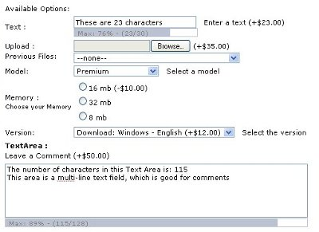

The Option Types v2 contribution adds the following functionality to osCommerce:
- The following Option Types:
- Text (With progress bar)
- Text area (With progress bar)
- Uploads
- Checkboxes
- Radio buttons
- Option Sort Order (this makes it possible to order the attributes in product_info by Option)
- Option Length (this is for Text fields. Limits to the number of characters, which is shown in a progress bar)
- Comments for Options (if set in Admin, this is shown after the Option in product_info)
- Uploads are 'connected' to the customer, who now gets a dropdown with uploaded files when upload option is available.
- Uploads are placed in temporary directory if the customer is a guest, and in uploads directory if customer is registered (moves files if customer signs in)
- Temporary Uploads folder is automatically cleaned. How old the files must be for deletion, can be set via Admin.
- Use AJAX Attribute Manager for editing product attributes (Removes product attributes from product_attributes.php in Admin (hmmm.... ;D ))
- If the AJAX Attribute Manager is not wanted/needed, it is easy to exclude from the installation
|

|